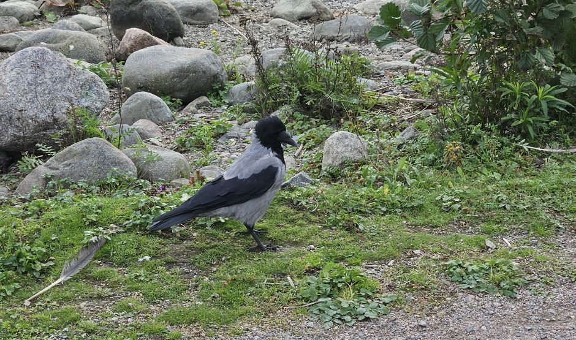
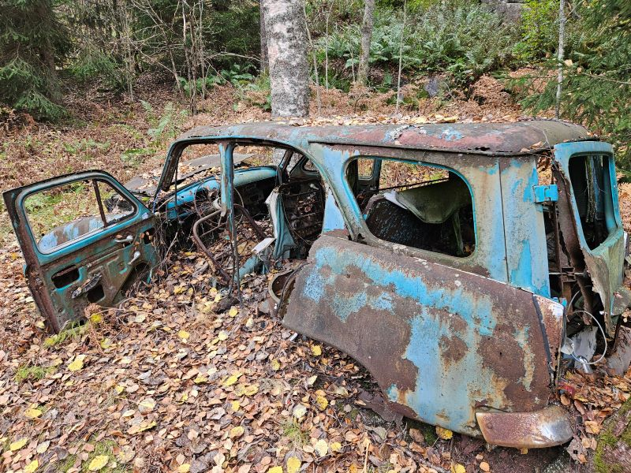

(12.10.2024) Orava ja sienet
Aurinkoinen aamu kutsui minut metsään, varustettuna kamerani ja intohimon kanssa. Suunnitelmanani
oli
löytää orava,
joka nauttisi kärpässienistä, ja ikuistaa hetki, jolloin se maisteli metsän herkkuja.
Metsä oli täynnä elämää; linnut lauloivat ja tuuli humisi puissa.
Kuljin polkua pitkin, kuunnellen askelteni ääntä lehtien päällä. Löysin kauniita kärpässieniä,
niiden kirkkaat värit loistivat metsän vihreydestä. Mutta oravaa ei näkynyt. Odottelin
kärsivällisesti,
toivoen sen ilmestyvän. Aika kului, ja metsän rauha alkoi tuntua yksinäiseltä.
Yhtäkkiä, kauempana puussa, näin liikettä. Raskaat sydämenlyönnit saivat minut valppaaksi,
mutta pettymys iski, kun havaitsin, että se oli vain tuuli, joka heilutti oksia. Orava oli
kadonnut.
Lopulta luovutin, sillä auringonvalo alkoi häipyä. Vaikka en saanutkaan kuvaa unelmani oravasta,
matka oli silti täynnä kauneutta ja rauhoittavaa luontoa. Palasin kotiin tyhjien muistikorttien
kanssa, mutta sydän täynnä metsän hiljaista viisautta.
(1.10.2024) Mikä lintu kyseessä?

Lintu oli keskikokoinen, sen sulat mustan ja harmaan sävyissä sekoittuen kuin tumma myrskytaivas.
Siipien reunat hohtivat hieman hopeisina auringonvalossa, mutta lintu pysytteli tiiviisti
piilossa tiheiden pensaiden suojassa,
ja ilmestyi näkyviin vain hetkeksi. Sen pyöreä pää oli varustettu suurella, terävällä nokalla,
joka vaikutti
sopivalta saaliin naposteluun.
Silmät, kirkkaat ja tarkkaavaiset, skannasivat ympäristöä epäluuloisesti.
Lintu päästi satunnaisia ääniä, jotka muistuttivat ruosteisia saranoita, ja sen ympärillä leijui
häiritsevä kalman haju. Tämä outo yhdistelmä teki siitä mystisen ja kiehtovan.
Sen käyttäytyminen oli varovaista: jokainen liikahdus oli harkittu, kuin se olisi jatkuvassa
valppaudessa.
Samaan aikaan se huokui myös erikoista kauneutta, joka sai katsojan miettimään, mitä muuta
salaperäistä metsä kätkee sisälleen.
(15.9.2024) Täydellinen kuva...
Kuvassa näkyy majesteettinen hirvi, joka taitavasti kiipeää korkealle, vanhan tammen oksille.
Auringonvalo suuntautuu puun läpi, luoden lämpimiä, kultaisia sävyjä, jotka korostavat hirven
tiheää,
ruskeaa turkkia. Sen suuret, kauniit sarvet kaartuvat näyttävästi taivasta kohti,
kuin se haastaisi luonnon voimat. Taustalla metsän syvänvihreät värit luovat kontrastia hirven
ruskeudelle.
Oksat ovat täynnä tuoreita lehtiä, ja lehtien välistä siivilöityy valoa, joka saa koko
kohtauksen
näyttämään taianomaiselta.
Tämä täydellinen hetki vangitsee luonnon kauneuden ja eläimen majesteettisuuden.
Valitettavasti kamerasta loppui akku kriittisellä hetkellä ja kuva jäi saamatta...
(7.9.2024) Luonto ottaa omansa

Sininen, vanha auto on jäänyt unohduksiin syvälle metsään, missä sen pinta on peittynyt
ruosteeseen ja kasvillisuuteen.
Auto näyttää olevan 1960-luvulta, ehkä jopa aikaisemmalta, ja sen muotoilu viittaa aikakauden
tyypillisiin piirteisiin.
Tämä auto on todennäköisesti ollut omistajansa ylpeys,
mutta aika ja luonto ovat ottaneet sen takaisin. Sen alkuperä jää arvoitukseksi, mutta historiaa
sen ympärillä on varmasti.